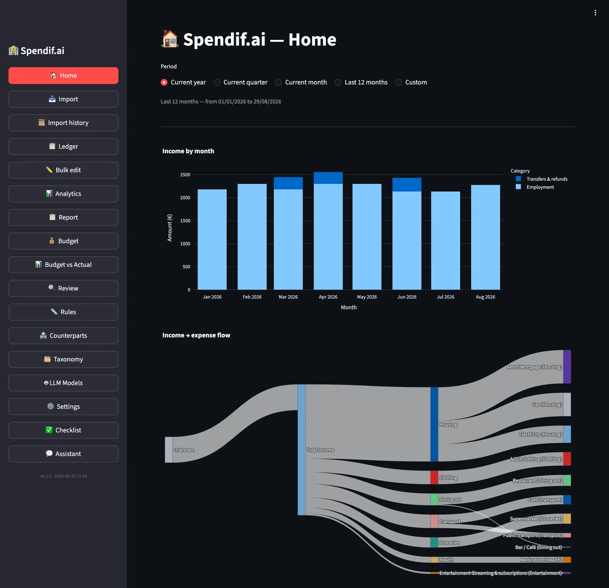
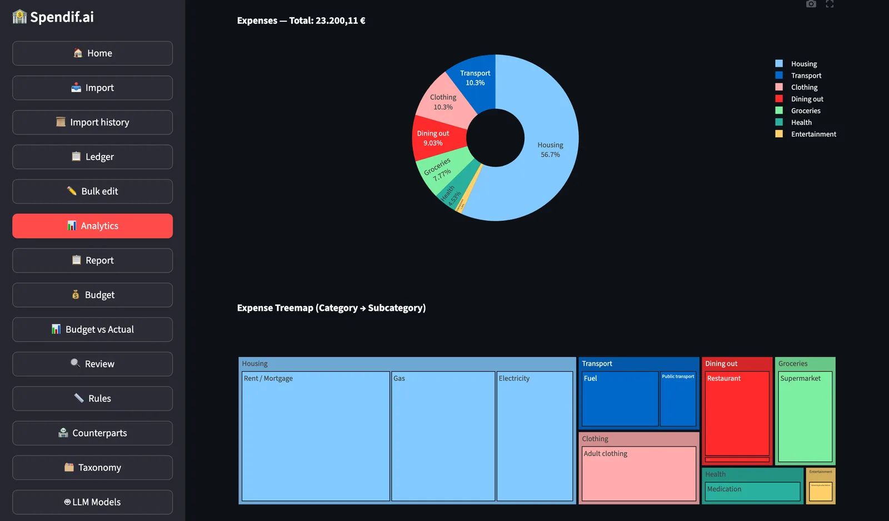

Importieren Sie Dateien von all Ihren Banken. Spendify führt sie zusammen, eliminiert Doppelzählungen, klassifiziert jede Transaktion — und Ihre Daten verlassen niemals Ihre Festplatte.
Python · Streamlit · SQLite · Ollama · kein Konto erforderlich
Jeden Monat: herunterladen, Excel öffnen, einfügen, Vorzeichen korrigieren, Duplikate finden. Und jedes Mal stimmt etwas nicht.
Drei Kontobewegungsdateien von drei verschiedenen Bankportalen, inkompatible CSV-Formate, Daten in unterschiedlichen Formaten, Beträge mit zufälligen Vorzeichen. Das manuelle Zusammenführen dauert Stunden und erzeugt immer Fehler.
Der Supermarkteinkauf erscheint auf der Kreditkartenabrechnung und auf dem Girokonto als monatliche Sammelabbuchung. Alles zusammengerechnet erscheinen Ihre Ausgaben doppelt so hoch wie sie tatsächlich sind. Kein gängiges Tool löst dies automatisch.
Eine Überweisung auf ein Sparkonto ist keine Ausgabe. Aber wenn Sie beide Konten importieren, erscheint dieselbe Transaktion zweimal — als Abgang vom Girokonto und als Zugang auf dem Sparkonto.
300 Transaktionen pro Monat von Hand zu klassifizieren ist ein Vollzeitjob. Cloud-Apps erledigen das, aber sie senden Ihre Bankdaten an ihre Server und verlangen ein monatliches Abonnement.
Die Oberfläche ist auf Italienisch und Englisch verfügbar.
Keine Bankintegrationen, kein Konto, keine dateibezogene Konfiguration.
Exportieren Sie Kontobewegungen als CSV oder XLSX aus dem Portal Ihrer Bank. Funktioniert mit jeder Bank — Spendify erkennt das Format automatisch ohne manuelle Konfiguration.
Wählen Sie alle Dateien auf einmal aus, auch von verschiedenen Banken, auch aus verschiedenen Jahren. Spendify erkennt den Dokumenttyp, korrigiert Vorzeichen, eliminiert Doppelzählungen zwischen Karte und Konto und klassifiziert jede Transaktion.
Das einheitliche Hauptbuch zeigt alles an einem Ort: Diagramme, Filter, Export, und die Gewissheit, dass jeder Euro genau einmal gezählt wird.
Drei Ansichten der laufenden App. Die gezeigten Daten sind Beispieldaten.


Dies ist keine generische Budget-App. Sie ist für die spezifischen Probleme von Menschen mit mehreren Bankkonten konzipiert.
Wenn die Kreditkarte den monatlichen Betrag vom Girokonto abbucht, erkennt Spendify die Beziehung und entfernt die Doppelzählung automatisch.
Zeitfenster ±45 Tage · 3 Abgleichsphasen: Gleitfenster → Teilsumme für aufgeteilte Beträge → Teilabgleich
Eine Überweisung vom Girokonto auf ein Sparkonto ist weder eine Ausgabe noch eine Einnahme: Es ist eine interne Überweisung. Spendify erkennt sie durch Vergleich von Beträgen, Daten und Kontoinhabernamen in den Beschreibungen — selbst wenn die beiden Dateien zu unterschiedlichen Zeiten importiert wurden.
Jede Transaktion hat eine eindeutige ID, die aus ihrem Inhalt berechnet wird (SHA-256). Wenn Sie dieselbe Datei zweimal importieren, passiert nichts. Sie können Ihre gesamte Transaktionshistorie ohne Angst vor Duplikaten erneut importieren.
Die Kategorisierung verwendet vier Ebenen nacheinander:
Das ist nicht nur ein Slogan. Es ist die Architektur.
Spendify verwendet standardmäßig Ollama lokal: eine KI-Engine, die auf Ihrem Computer läuft, ohne Internetverbindung. Ihre Kontobewegungsdateien verlassen niemals Ihre Festplatte.
Wenn Sie OpenAI oder Claude verwenden, entfernt Spendify automatisch alle identifizierenden Daten vor jedem Remote-Aufruf:
Wenn die Prüfung fehlschlägt, wird der Aufruf blockiert — nicht stillschweigend herabgestuft.
Daten werden in einer SQLite-Datei auf Ihrem Computer gespeichert. Sie können sie kopieren, verschieben, sichern wie jede andere Datei. Keine obligatorische Cloud, kein Konto, kein Abonnement.
Vier Profile, die in Spendify etwas finden, was Alternativen nicht bieten.
Girokonto + Kreditkarte + Sparkonto + Depotkonto? Spendify vereint sie alle in einem einzigen Hauptbuch, ohne dass Sie etwas manuell tun müssen.
Wenn Sie Excel für Ihre Ausgaben verwenden, kann Spendify diese Routine ersetzen: Sie importieren die Dateien einmal, Spendify vereinheitlicht und klassifiziert, Sie überprüfen nur die Ausnahmen.
Kein obligatorisches Remote-Backend, kein Konto, keine Registrierung. Ihre Bankdaten bleiben dort, wo sie hingehören: auf Ihrem Computer.
Open-Source-Python-Projekt mit modularer Architektur, LLM-Pipeline auf strukturierten Daten, vollständige Testsuite. Ein Ausgangspunkt zum Experimentieren oder zum Erstellen benutzerdefinierter Integrationen.
Native Desktop-App mit integrierter lokaler KI. Kein Docker, kein dauerhaft offenes Terminal.
📥 Installer herunterladen (DMG · MSIX · .deb · .rpm)
Schritt-für-Schritt-Anleitung mit Screenshots → Installation & erster Start
— oder, über das Terminal: —
Das Skript erkennt deine Hardware, lädt das für deinen RAM optimale KI-Modell (1–7 GB) und konfiguriert alles — kein Aufwand.
Die App erscheint in Launchpad / Startmenü / Dateimanager, einsatzbereit.
Entwickler oder manuelle Installation? → Vollständige Anleitung
Nur Docker Desktop erforderlich. Offizieller Container vom GitHub Container Registry, Browser auf http://localhost:8501.
🆘 Brauchst du Hilfe? Öffne ein Issue auf GitHub — Bugs, Fragen, Feature-Wünsche.
⭐ Gefällt dir Spendif.ai? Gib uns einen Stern — das hilft uns, in die offiziellen Paket-Registries (Homebrew Core, winget) zu kommen.
Kein LLM-Framework (kein LangChain) — KI-Backends verwenden die offiziellen SDKs direkt.
LLMBackend implementieren (3 Methoden) und in BackendFactory registrieren. Funktioniert mit jeder OpenAI-kompatiblen API.
Flow 2 erkennt sie automatisch per LLM ohne Codeänderungen. Das Schema wird gespeichert und bei nachfolgenden Importen wiederverwendet.
Über die Taxonomie-Seite, ohne den Code zu berühren. Die Taxonomie ist vollständig über die Oberfläche konfigurierbar.
Die process_file()-Pipeline ist vollständig von der UI getrennt — sie kann ohne Änderungen über FastAPI bereitgestellt werden.
winget install SpendifAi.SpendifAiBereiche, in denen Beiträge am nützlichsten sind:
Wenn Ihre Bank nicht automatisch erkannt wird, öffnen Sie ein Issue mit einer anonymisierten CSV-Beispieldatei.
Die Suite deckt die Business-Logic-Schicht ab, aber noch nicht die Streamlit-Oberfläche. Hier gibt es Raum für Beiträge.
Die Architektur unterstützt bereits mehrere Sprachen für Beschreibungen. Die UI ist auf Italienisch — es gibt Spielraum für weitere Sprachen.
Batch-Kategorisierung ist der Engpass mit einem lokalen LLM. Hier gibt es Raum für Parallelisierung.